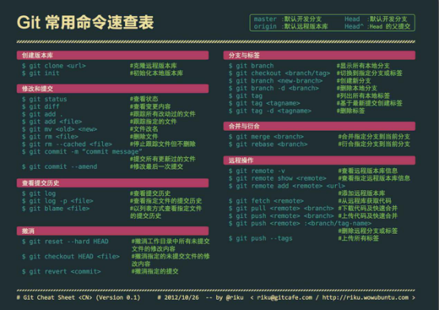

微博密码: nimengwei1990
新浪云账号:254060001@qq.com 密码:299******
微信公众平台账号:13567153653@163.com 密码: nmw299******
新浪云操作:
(1)登录新浪云—控制台—云应用SAE—创建新应用(PHP5.6)...—进入应用—应用—代码管理—Git代码部署—获取仓库地址(https://git. sinacloud.com/nmwei)
微信公众平台操作:
(2)进入微信公众平台—公众号设置—功能设置—JS接口安全域名nmwei.applinzi.com
(3)进入微信公众平台—基本配置—成为开发者—开发者ID—获取AppID(应用ID)和AppSelect(应用秘钥)
本地准备工作:
(4)修改index.php文件，将AppID和AppSelect覆盖$jssdk = new jssdk("wx4b1e51e9e80932ee", "a509eea97c87a7a4318c452db6b22573");的两个参数
(5)将index.html中代码复制到index.php文件中，将index.php文件中相关html代码注释，修改index.html文件名(index.php成为web主页)
(6)创建新文件夹—将所有PHP文件和本地web文件拷入该文件夹
git操作指令:
创建版本库：
(1)创建本地文件夹(工作区) mkdir 文件夹名称
(2)显示当前本地文件(工作区)目录 pwd
(3)显示下一级本地文件(工作区)目录 ls
(4)初始化本地版本库 git init
备注:本地分支属于本地版本库(即本地仓库)，远程分支属于远程版本库(即远程仓库)。
修改和提交：
(1)已修改工作区文件同步到暂存区 git add readme.txt
(2)所有已修改工作区文件同步到暂存区 git add .
(3)暂存区已修改文件同步到版本库 git commit -m "注释"
(4)工作区已修改文件内容到版本库 git commit -am "注释"
(5)查看文件版本修改提交状态 git status
注释:红色为已修改工作区内容，绿色为已修改暂存区内容，不出现已提交到版本库的文件。
(6)查看变更内容 git diff
注释: (查看变更)→跟踪文件(git add .)→提交已更新文件(git commit -m "注释")
查看提交历史:
(1)查看向版本库(本地分支)提交历史 git log
(2)撤销未提交文件的修改内容 git reset --hard
分支操作：
(1)建立新的本地分支 git branch yupeng
(2)查看所有本地分支 git branch
(3)切换到指定本地分支 git checkout yupeng
注释: 如果修改了工作区，commit操作之后，才可以切换到指定分支。
注意: 切换到指定分支之后，本地文件夹中的内容会相应改变。
(4)合并指定本地分支到当前本地分支 git merge origin/yupeng
(5)删除指定本地分支 git branch -D 1(本地分支名)
远程操作:
(1)克隆远程版本库: git clone 远程仓库地址
注释:只允许向无子文件夹的本地文件夹克隆远程版本库。
(2)查看所有本地分支与远程分支 git branch -a
(3)推送本地分支到远程分支： git push origin 1(分支名)
注释:路径为index.php所在目录。更新版本后应首先清理浏览器缓存。
注意:第一次上传本地主干上的内容，则命令为git push origin master:1
如果本地有主干，则从主干向远程分支上传文件。
(4)删除指定远程分支 git push origin --delete 2
注释:不可以删除已设置为默认版本的远程分支。
注意:git是一个版本控制工具。
github是一个用git做版本控制的项目托管平台。
svn-集成式管理方式
git-分布式管理方式
(1)在github网站上创建远程仓库
点击头像左侧加号→点击New repository→填写仓库名(Repository name)→填写描述(Description)→点击Initialize this repository with a README→点击Create repository
(2)本地下载远程仓库
打开Git Bash→进入本地文件夹F:\mygit→git clone +url
(3)设置贡献者
cd drag→git config --global user.name "nmw1990"→
git config --global user.email "254060001@qq.com"
注意:①只有进入到drag文件夹中(cd drag)，才可以执行相应的操作。②设置用户名和邮箱后，我们可以通过git config --global user.name命令，查看用户名；通过git config --global user.email查看邮箱。③可以通过git config --list查看git下所有的配置。④master为主分支，特别需要注意的是其他分支并不是主分支的一部分，而是主分支复制一份，进行修改之后的版本。其他分支合并到主分支的含义为其他分支覆盖主分支。(类似于毕业论文的修改过程)
工作区:本地可以看见的drag文件夹。
暂存区:作为过渡层，避免误操作，保护工作区和版本区，分支处理。
版本区(库)
工作区—git add .→暂存区—git commit -m "注释"→版本库
在drag文件夹中新建demo1.html文件和drag.js文件→git status→
git add demo1.html→git commit -m "20160823"→git log
注释:①git status 查看当前工作区和暂存区的状态(红色代表该文件在工作区，绿色代表该文件在暂存区)。②工作区直接到版本库git commit -am "注释"。③git log查看commit历史。④点击q取消git log命令。
(1)git diff: 暂存区与工作区之间的对比(上方红色为暂存区，下方绿色为工作区)
(2)git diff -- cached:版本库与暂存区之间的对比(上方红色为版本库，下方绿色为暂存区)
(3)git diff master:版本库与工作区直接的对比(上方红色为版本库，下方绿色为工作区)
注意:① --两边都有空格。②git diff只能够对比工作区和暂存区中文件内容差异。若工作区没有1.txt，暂存区有1.txt，但其文本内容为空，则git diff无法识别两者的差异。
(1)git reset HEAD 文件名——撤销git add 文件名 操作命令
即:git reset HEAD 文件名←→git add 文件名
注意:该命令改变暂存区文件内容。
(2)git checkout -- 文件名——暂存区文件覆盖工作区文件
即:git checkout -- 文件名←→工作区文件修改，但未提交
注意:该命令改变工作区文件内容。
注意: git reset --hard HEAD——撤销工作区中所有未提交文件的修改内容。
(3)git checkout ID 文件名
即:将版本库里的某一个文件恢复到工作区。
在sourceTree中: 重置当前分支到此次提交。
注释：该命令改变工作区文件内容。版本ID可通过git log获取。
(4)git commit -m "注释" --amend——撤销上次提交，和这次合并一块提交。
(1)工作区文件可以手动删除
只删除工作区对应文件。
(2)git rm 文件名
工作区已上传到暂存区的文件，若工作区此文件手动删除，则可通过此命令删除暂存区此文件。
注意:①若工作区此文件未删除，则不可以通过此命令删除暂存区文件。②git diff只能够对比工作区和暂存区的文件内容差异。③git status可以对比工作区和暂存区的文件数目差异。
(3)git rm -f 文件名
同时删除工作区和暂存区共有的文件。
(4)git rm --cached 文件名
只删除暂存区存在的文件，工作区对应文件不删除。
总结:(1)删工作区，不删暂存区→(2)工作区删除后，删暂存区→(3)同时删工作区和暂存区→(4)→只删暂存区，不删工作区
(1)git reset --hard ID (回到任意版本)
将版本库里的某一个版本恢复到工作区。
注释：该命令改变工作区文件内容。版本ID可通过git log或者git reflog获取。
注意:git log查看曾经的版本，git reflog查看未来的版本。
(2)git reset --hard HEAD^ (回到过去)
将版本库里的上一个版本恢复到工作区。
(3)git reset --hard HEAD~数字 (回到过去)
将版本库里的上n个版本恢复到工作区。
对比:git checkout ID 文件名
即:将版本库里的某一个文件恢复到工作区。
注释：该命令改变工作区文件内容。版本ID可通过git log获取。
git remote→git push origin master→输入用户名:nmw1990→输入密码:a299792458
注释:①git remote—查看远程仓库名字,默认为origin。②git remote -v查看远程仓库地址。③git push 远程仓库名字 本地分支名字
注意:远程仓库名字而不是远程分支名字。
问题:git push origin master发生错误，无法提交。
(1)git fetch
→git fetch
→git diff master origin/master
查看区别(绿色为远程内容红色为本地内容)
→git merge origin/master 本地冲突部分合并
→手动取舍冲突部分
→git commit -am '注释'
→git push origin master
(2)git pull
git pull
将远程内容拉取到本地
注意:①多人协作开发时(每个开发人员都有开发权限)，开发人员在开发之前应首先同步远程仓库(git pull)，避免冲突。②第一种方式为先查看差别，再手动合并。第二种方式直接合并，不容易看出差别。③多人共用一个分支才会出现这种问题。
fork
在gitHub中，若没有开发权限，则可以点击fork按钮，含义为开一个分支，即完整复制一个版本放到自己用户中。
pull request
在自己用户中克隆、修改、提交完成之后，点击pull request按钮，向开发人员发送合并分支请求。
GitHub中的项目代码除了可以通过克隆到本地的方式修改代码之外，还可
以直接在Github网站中修改。
进入github项目→settings→Delete this repository
→输入要删除的仓库名字
注意:应谨慎删除仓库项目。
git branch(查看分支)→git branch new1(创建new1分支)→git checkout new1(切换到new1分支)→git checkout -b new2(创建并切换到new2分支)→git checkout new1(切换到new1分支)→修改demo.html文件内容→git commit -am "注释"→git checkout master(此时master分支文件内容未改变)→git merge new1(此时master分支文件内容发生改变)→ git branch --merged(查看已经与master分支合并的其他分支)→git branch --no-merged(查看未与master分支合并的其他分支)→git branch -d new1(删除new1分支)→git branch -D new2(删除new2分支)
总结:①git branch—查看所有本地分支;git branch -a 查看所有本地分支与远程分支;②git branch 分支名—创建分支;③git checkout 分支名—切换到指定分支;④git checkout -b 分支名—创建并切换到指定分支;⑤git merge 分支1—将分支1文件版本合并到当前分支;⑥git branch --merged—查看已经与当前分支合并的其他分支;⑦git branch --no-merged—查看未与当前分支合并的其他分支。⑧git branch -d 分支名—删除指定分支。
其中:git branch -d只能够删除已经被合并的分支;git branch -D可以删除所有分支。
注意:在某一个分支上commit的所有版本库都属于当前分支，在某一个版本上可以开辟新的分支，在同一个版本上开辟的所有分支都拥有该版本，不同分支拥有不同的版本库，不同分支可以合并操作。切换分支时，工作区会自动切换到该分支对应的版本库。
当执行git merge 分支发生错误时:
git status(打印冲突的文件)→手动删除→git commit -am '注释'
注释:分支在合并之后可以删除。
(1)git push创建分支
git branch new1→git checkout new1→修改文件内容→git commit -am'注释'→git push origin new1
注释:①github上按钮含义：commits—共提交了多少个版本;branch—共有多少个分支(master);releases版本里程碑;contributor—共有多少协作开发人员;Watch关注数量;Unstar点赞数量;Fork完整复制一个项目放到自己用户中;②git push 远程仓库名字 本地分支名字上传远程分支后，分支名默认与本地分支名相同。
(2)github上直接创建分支
点击Branch:master→输入Find or create a branch→Create branch new2 form master
(1)git tag
git commit -am '注释'→git tag v1.0→git tag→git push origin v1.0
注释:①git tag 版本信息—设置版本信息; ②git tag获取版本信息。③git push origin v1.0将当前版本文件同步到github。
(2)github上直接创建
点击relese→Draft a new release→输入版本号→Publish release
点击头像左边的+号→New organization→输入Organization name→输入Billing email
Github上创建
说明文档:https:pages.github.com/
步骤: 点击头像左边的+号→New repository→输入Repository name:nmw1990.github.io→输入Description:个人博客
博客地址:https://nmw1990.github.io/
注意:格式的住正确性。
(1) 如何深入
git偏重工具，注重实战。
(2) 技巧
cd .. 返回上一层
ls 查看目录结构
mkdir 名字 创建文件夹
notepad 名字 创建文件
git bran+tab键 自动补全
git config --global alias.co checkout 设置简写别名
git list
(3) 资源
http://git.oschina.net/progit/
http://www.liaoxuefeng.com/wiki/0013739516305929606dd18361248578c67b8067c8c017b000